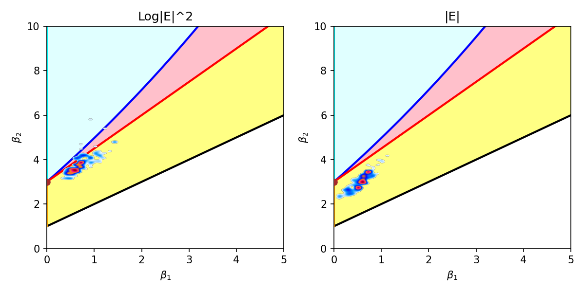
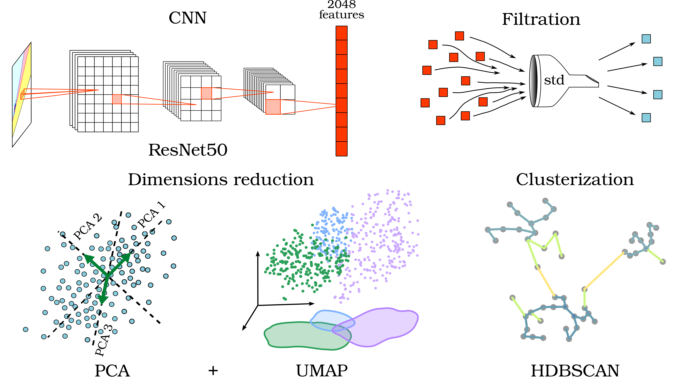
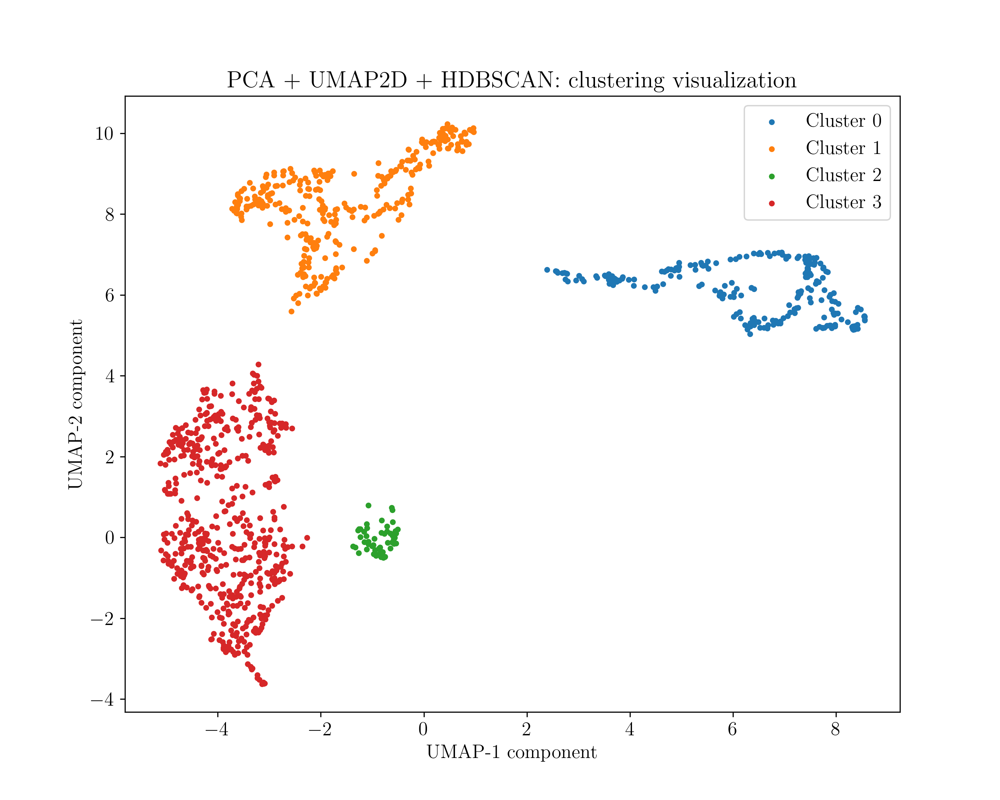
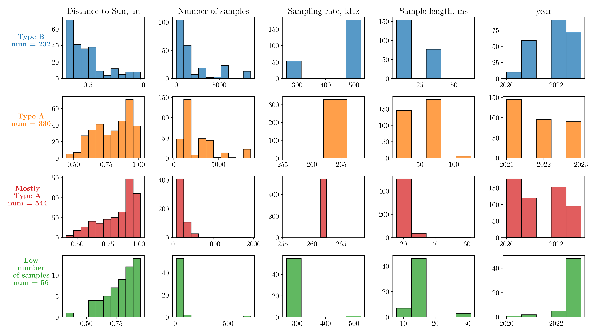

(⚠ This project is under active development)
This project is designed for automatic classification of statistical diagrams obtained from plasma turbulence measurement data by Solar Orbiter (RPW-TDS instruments). For details on the physical formulation of the problem, obtaining and analyzing diagrams, see V.Annenkov, C.Krafft, A.Volokitin, and P.Savoini Statistical properties of beam-driven upper-hybrid wave turbulence in the solar wind, accepted to A&A Letters. The results, including those obtained with the help of this project, are planned to be published in the journal Journal of Geophysical Research: Machine Learning and Computation.
For an example of typical Pearson charts that need to be classified, see below and in the folder ./images/images_regular_data/.

The problem: a set of > 2 thousand statistical diagrams images must be clustered and analyzed. No labeled training data is available.
Image processing: 1. Feature extraction from an image by pretrained CNN ResNet50, without classification head; 2. Filtering of low-informative features; 3. Smooth reduction of feature space dimension: PCA + UMAP; 4. Clustering and sorting images by HDBSCAN;

The project implements the ability to manually construct a pipeline based on any (reasonable) combination of standardization methods (StandardScaler, Normalizer - sci-kit learn library) and dimension reduction methods (UMAP, PCA). Parameters can be adjusted.
For comparison, clustering methods like DBSCAN and KMeans are also supported with the ability to set parameters.
To evaluate unsupervised clustering, Silhouette score and Davies Bouldin score are used.
To evaluate cluster stability, Adjusted Rand score is used.
Cluster labels are stored in a resulted DataFrame along with image paths.
What This Project Demonstrates
The example of clustered data obtained by a standard algorithm: ResNet without a last layer + PCA(with 0.95 dispersion threshold) + UMAP 2D + HDBSCAN, - is below.

Histograms for clusters in the dependence on parameters of measurements:

The main part of the project responsible for data processing is packaged in the mclustering module. An example of using the module is given in main.py. The manalyse module is used to visualize the results, an example of using main_plot.py.
The minteractive module implements interactive (from the console) launch of processing, guiding through the entire process, with the ability to select a specific pipeline. An example of use is presented in main_interactive.py, (is in progress)
project
├── main.py # basic pipeline
├── main_interactive.py # interactive processing
├── main_plot.py # visualization
├── README.md
├── LICENSE
├── mlustering # the main module for proccessing
| ├── __init__.py
| ├── libfeatures.py # feature extraction
| ├── libprepocessing.py # dimension reduction
| ├── libclustering.py # clustering, clusters visualization and evaluation
| ├── libservice.py # supplementary functions
├── minteractive # interactive module
| ├── __init__.py
| ├── libintercative.py # supplementary functions for input/output
| ├──libprocesspipeline.py # automatical launch of the process
├── manalyse
| ├── __init__.py
| ├── plot_funcs.py # functions for visualization
images folder is for source images to be analysed. The source images are supposed to be placed in a separate subfolder with name starting with 'images_'.
data folder is supposed to contain a metadata-file describing the images.
├── images # source images
| ├── images_regular
├── data # for metadata, data description
Results are supposed to be saved as
- .pkl or .json file for a resulted database with labels - results folder
- subdirectory in processed folder named as 'processed_{specification as for images folder}'; images are sorted in there in different subdirectories according their label: 'label_0', 'label_1, ... 'noise'
- Visual data .pdf/.png should be saved in figures folder.
├── results # .pkl/.json resulted database
├── processed
| ├── processed_regular
| | ├── label_0 # for sorted images with label 0
| | ├── label_1 # for sorted images with label 1
├── figures # for visual results
documentation folder is for .html/.pdf documentation. The documentation is generated semi-automatically with Pdoc.
logs - full logs per run.